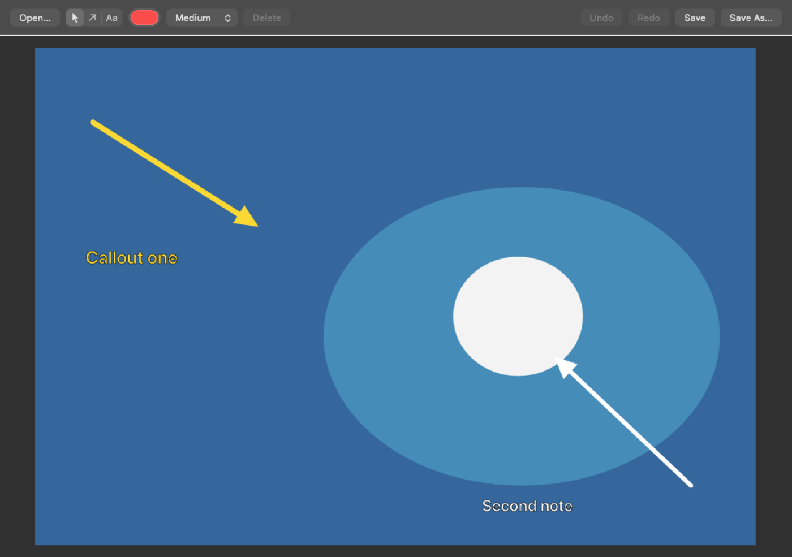

VU · Interactive session
Session 3 Learn. Build. Repeat. Just Do It! with Somphol Boonjing
←→ to move · O overview · N notes Swipe to move · tap ▦ for the overview
Open with the constraint, not the tools. Session 3 is the loop: choose one thing, learn just enough, build it, refine, then let the build suggest the next thing.
- One line to set up the hour: “Nothing is hidden anymore. The scarce skill is staying on one question long enough to finish.”
- Keep the first ten minutes fast. The demos land better after the room has the frame.
01 Today, in five parts
Five parts.
One loop.
- Learnfocus, sources, critical thinking
- Buildwhat, where, the loop
- See ittwo real apps
- Source itwhere answers live
- Ship itmindset, momentum, your turn
Every part feeds the same loop. Start anywhere.
Show the map before the territory. Five parts, one loop. Name them, then move.
- Learn: how to stay on one question and use sources without drowning.
- Build: what to build, which platform, and the loop that keeps it moving.
- See it: two real apps, so this is not theory.
- Source it: where answers actually live, free and paid.
- Ship it: confidence, momentum, the blocker question, and the take-home action.
02 Part one
Learn.
Stay on one question long enough to finish.
- 01 Focus
- 02 Sources
- 03 Thinking
Learn. This part is about attention and input. Pick one question, use sources without drowning, and check your own answer.
- Scarcity is the frame: access is solved, attention is not.
- Course selection and one-tab focus are the mechanics.
- Sources: research, NotebookLM, voice brainstorming, critical thinking.
03 The new scarcity
Everything is available.
Nothing is finished.
- Accesssolved
- Focusone question
- Extractionthe next step
- Finishthe rare part
What did you finish last month?
Name the shift. Five years ago, finding the material was the hard part. Now the material is free, infinite and better produced than most lectures. The bottleneck moved to selection and attention.
- Ask the question on screen. Let two people answer. Most will name a topic, not an output.
- Follow-ups: “Count your open tabs. That is your real syllabus.” “Name one thing you could finish in a single sitting.”
- “The internet is a library with no librarian and no closing time. You need a syllabus.”
- Vast knowledge is not the advantage. Extracting the next useful thing is.
04 Course selection
Pick a semester.
Not a universe.
- ShipOne video, then docs. A URL you can send.
- AutomateOne chat, one tutorial. Runs on your Mac.
- UnderstandAn explainer, then NotebookLM. Explain it closed.
- RebuildOne reference. Your own smaller version.
The course-selection metaphor does the work. Nobody tries to attend every lecture at a university. Online, we do exactly that: forty tabs, twelve playlists, nothing finished.
- Click through the four cards. Each has a source, an output and a finish line.
- The finish line matters more than the topic. “Understand AI” never ends; “explain it with the laptop closed” does.
- Ask: which one would you actually finish this week?
- Detail is on the card only after a click. Do not read it aloud.
05 The focus protocol
One tab.
One question.
- Writethe question first
- Narrowthis page, not ten
- Notewhat changes next
- Closethe other tabs
“The one thing I am learning is…” Three answers means no session.
This is the practical answer to “how do I stay focused?” The tool is not the problem. The missing artifact is a written question with a finish line.
- Demonstrate the extension on one page: summarize only the section that answers the current question.
- Every new tab is a context switch with a cost, even if you never read it.
- Timebox: twenty-five minutes, one source thread, one output.
- Prompt to keep: “I am building X. Teach me only the next step, five bullets, stop before advanced options.”
- FOMO answer: the tab will still be there next week; the momentum will not.
06 How to start
Do your
own research.
- YouTubewatch someone build
- Docsthe official path
- Searchthe exact error
- Tryin a scratch folder
There is no course to wait for. OpenCode is the example: the official docs, a handful of YouTube walkthroughs, search, and ten minutes in a scratch folder are enough to start.
- Official docs first: opencode.ai. Read install, config, and skills. Skim, do not study.
- Then YouTube: search “OpenCode tutorial”, watch one build at 1.5×, copy one thing.
- Use the tool to learn the tool: ask the agent “how do I add a skill here?” and make it show you.
- Search the exact error text. Someone has already hit it.
- Two sources minimum before you trust a claim. Then try it in a scratch folder, not your real project.
07 Digest a corpus
Feed it
everything.
- DocsPDFs, notes, pages
- Paperscited answers
- VideoYouTube links
- Askacross all sources
NotebookLM is for a body of material, not a single fact. Load the docs, papers and videos, then ask across all of them.
- Good inputs: a folder of PDFs, a documentation set, research papers, long YouTube talks, your own notes.
- Ask grounded questions and follow the citation back to the page before you believe it.
- Use the audio overview for a first pass on a dense subject; read the sources for the details.
- It only knows what you gave it. It will not tell you what is missing from the corpus.
- Compare with plain chat: chat answers from general knowledge; a notebook answers from your sources.
08 Think out loud
Talk it out.
Keep the wheel.
- VoiceGemini Live, ChatGPT voice
- Aloudideas arrive mid-sentence
- Wrongthe agent can be wrong
- Controlyou make the call
Voice changes the quality of the thinking, not just the speed. Talking out loud forces you to finish a sentence, and the unfinished ones are where the idea was hiding.
- Use Gemini Live, ChatGPT voice, or just talk to the coding agent while it reads the repo.
- Say the messy version first. Do not compose. The agent’s reply is a mirror, not an answer key.
- It will be confidently wrong. Check names, numbers and APIs before you act.
- You are the decision maker. The agent proposes; you accept, reject or reshape.
- Stop when you have one next action. Talking is not the deliverable.
09 Critical thinking
Question your
own answer.
- Assumptionthe part you never checked
- Biaswho does this serve?
- Blind spotask what is missing
- Evidenceor it is just a story
Search “critical thinking” and learn the tools properly. They are old, cheap and not specific to AI: falsification, steelmanning, base rates, incentives, selection bias, survivorship bias, confirmation bias.
- Ask of any answer, including your own: what would change my mind?
- Steelman the opposite view before you reject it. If you cannot state it fairly, you do not understand it.
- Check the incentive behind the source. Free content still has an author with a goal.
- Ask the agent: “what am I missing, and what would make this wrong?” Then verify one claim yourself.
- Blind spots are not found by thinking harder. They are found by asking someone who sees differently.
10 Part two
Build.
From a real annoyance to a running app.
- 01 What to build
- 02 Which platform
- 03 The loop
- 04 Momentum
Build. This part turns the idea into something running, on any platform, and keeps it moving.
- Start with your own pain, not a trend.
- Any platform: web, Mac, Windows, iPhone, iPad, Android.
- The loop is start, iterate, refine, new idea. Effort and public work keep it turning.
11 What to build
Start with
your own pain.
- Itchyou feel it weekly
- Workaroundwhat you do now
- Gapone step missing
- Youone user first
Answer “what should I build?” with your own annoyance, not someone else’s trend.
- Ask the room: what did you do twice this week that annoyed you? That is the project.
- The workaround is the spec. Write down the steps you take today; the app removes one of them.
- One user first: you. If you do not use it twice, it was not a real pain.
- Small is not a limitation. Small is what makes the first version finishable tonight.
- Both demos later started this way: an arrow needed to replace a paragraph; saved videos needed a shelf.
12 Pick a platform
Build anything.
Any platform.
- Webone link, any device
- MacSwift and Xcode
- WindowsC# and .NET
- iPhoneSwift, then App Store
- iPadsame app, bigger canvas
- AndroidKotlin, then Play
The platform is a detail. The build is the point.
This slide exists to remove a false limit. Students assume they must pick one lane. You can build anything: a web app, a Windows app, a Mac app, and with enough homework an iPhone, iPad or Android app.
- Web is the fastest to share: a link, any device, nothing to install.
- Mac and Windows give you real files, native speed and offline use. Swift/Xcode for Mac, C#/.NET for Windows.
- iPhone and iPad need more homework: Xcode, signing, App Store review. Android needs Kotlin and Play.
- Cross-platform options exist (Tauri, Electron, Flutter, React Native) when you want one codebase.
- Do not choose the platform first. Choose the pain, then the smallest container that reaches the user.
13 The method
The build
is the syllabus.
- Smallsmallest thing that runs
- Onevariable per run
- Queuecapture the tangent
- Shipversion two
You don’t need the whole map. You need the next turn.
This is the core habit of the session. Learning and building are not sequential. Each one asks the next question for the other.
- Real example: I started with a rectangle and a click handler, then learned state, then layout.
- Emphasise the idea queue. The tangent becomes the next iteration, not a detour.
- “What if I build it wrong?” Wrong versions are how you find the right question.
- What the build teaches that a tutorial cannot: boundaries, vocabulary, taste, momentum.
14 The loop
Start. Iterate.
Refine. New idea.
- Startsmallest version that runs
- Iterateone variable per run
- Refineremove before you add
- New ideathe build suggests it
Click each station as you talk. This is the slide the room should photograph.
- Start buys information. A running skeleton tells you more than another hour of video.
- Iterate is one variable at a time, so cause and effect stay visible.
- Refine is mostly subtraction: fewer features, clearer names, one path.
- New idea arrives from use, not brainstorming. The build proposes the next build.
- “You are not trying to finish the app. You are trying to keep the loop turning.”
15 Momentum
Effort is
the algorithm.
- Startten minutes
- Repeatcompounds
- Stillexpensive
- Repthirty minutes
Actions breed momentum. A skipped rep is the only expensive one.
Close the loop on motivation. Motivation is usually the result of movement, not the precondition for it.
- Three rules: actions breed momentum (a ten-minute start beats a ten-day plan); momentum compounds (each finished loop makes the next cheaper); stillness is expensive (the vocabulary leaks away between sessions).
- Tell them about a day you did not feel like building, and what ten minutes changed.
- Repetition over intensity: three short sessions beat one heroic weekend.
- “Don’t stay still” means do not spend a month choosing the stack.
16 Build in public
Build in public.
Learn in public.
- Feedbackbefore launch, not after
- Accountabilityyou ship because you said so
- Audiencecompounds with every post
- Proofthe work explains itself
Public does not mean polished. Post the small thing: a screenshot, a short clip, what broke, what you learned. The point is the loop, not the launch.
- Feedback arrives before you over-invest in the wrong feature.
- Public commitment is cheap accountability. Say what you will ship this week, then ship it.
- An audience compounds: each post is a small asset, and opportunities arrive through the work, not through networking.
- It is also documentation. Future you, and future employers, can see the progress.
- Keep private: credentials, customer data, anything under NDA. Share the mechanism, not the secrets.
17 Show your work
Show your work.
Make it fun.
- Cliptwo minutes, screen recording
- Shotone screenshot, one line
- Demothe app running, not the slides
- Funno polish required
If it was fun to make, it can be fun to show.
Showing the work is part of the loop, not a reward at the end. A two-minute clip or one screenshot is enough. The point is frequency, not production value.
- Formats: screen recording, screenshot with one line, a short YouTube video, a build log, a demo GIF.
- Show the app running, the bug you fixed, the ugly middle, the small win. Skip the slide deck.
- Make it fun: a silly title, a before/after, a two-minute timer. If it feels like homework you will stop.
- Post it where your people are: the group chat, a repo, YouTube, a short post. Link the code if it is public.
- Weekly beats perfect. One clip a week compounds faster than one polished launch a year.
18 Showcase
Two builds.
One loop.
- Annotatepoint at the thing
- TubeShelfkeep what you saved
- Lessonthe loop again
Switch from theory to evidence. Everything so far is cheap to say. These two apps are what the loop produced.
- Both are small, local, and solve a personal annoyance.
- Both were built by iterating on a running version, not by planning the finished product.
19 Build 01 · macOS
Point at
the thing.

- Arrowone gesture
- Textone line
- Exportfull resolution
- Safenever overwrites
An arrow is clearer
than a paragraph.
Show the workflow, not the toolbar. Screenshot → one arrow → one line of text → save → paste into the agent chat.
- The insight: most agent mistakes are reference mistakes. A markup file removes ambiguity that prose cannot.
- Features behind the three words: any colour with a readable outline; move, reshape and restyle after drawing; undo and redo; native-resolution export; saves a new
-annotatedcopy and refuses to overwrite the source. - Iteration evidence: v1 only drew arrows. Text, styling, undo and native export arrived from use.
- The source-safe rule started as a bug fix.
20 Build 02 · macOS
A shelf.
Not a graveyard.
- Pastereal title
- Tagon-device
- Presentcategory as a deck
- Localone JSON file
Watch later is where
videos disappear.
Two lessons in one demo. It solves a real annoyance, and the same product exists in three shapes: native app, read-only web viewer, editable web app.
- Paste a link live: title, channel and category arrive automatically; duplicates are caught by video ID.
- Press ⌘↩ to present a category. That is the feature people remember.
- On-device tagging needs Apple Intelligence or a local model; a keyword classifier is the fallback.
- No account, one JSON file: the user can back it up and leave.
21 More to steal
There is more.
Take one.
Browse for ten minutes. Then pick one and start.
This is the inspiration shelf. Two live links, both built with the same loop.
- Project Album: 57 finished builds with a screenshot, a live demo and the repository. Find a shape you like.
- VU Project Ideas: 54 detailed briefs with a complete prompt you can paste into a coding agent.
- The rule: browse for ten minutes, pick one, start tonight. Browsing is not building.
22 Part four
Source it.
Where answers actually live.
- 01 Search and AI
- 02 People
- 03 Books
Source it. This part is about the supply of answers: what is public, what needs people, and what is worth paying for.
- 90% is public; the last 10% needs judgement, context and access.
- O'Reilly Bookshelf: go look at it, about $199/year around Black Friday.
- Check library access before paying.
23 Where answers live
90% is public.
10% is people.
- Searchthe fact
- AIthe shape
- NotebookLMthe corpus
- YouTubethe workflow
- Peoplethe last 10%
Ask people for the 10% that was never written down. Not the 90% you could find.
Why is so much public? Publishing builds reputation, hiring pipelines, consulting leads and software adoption. The incentive to teach is real; exploit it.
- Match the source to the question, as the four words say. Search for a fact, a model for orientation, NotebookLM for a corpus, video for a workflow.
- The 10% that needs people: judgement on your specific situation, access to a system, context that is sensitive, a recommendation you trust.
- Ask well when you get there: what you tried, what you ruled out, the decision you need.
- The 90/10 split is a rhetorical model, not a measurement.
24 Source it
O’Reilly
Bookshelf.
Go look at it.
oreilly.com ↗About $199 a year, usually around Black Friday. Check your library access first.
The ask is simple: open the site. Do not sell the catalogue; let them see it.
- What is inside: technical books, courses, early releases, code samples and certification prep from O'Reilly and partner publishers.
- The annual sale usually lands around Thanksgiving / Black Friday at roughly $199 USD for a year. Treat the date and price as approximate.
- Before paying, check employer, university or public-library access. It is often already free to you.
- Then use it surgically: one chapter before a build, one when you are stuck.
25 Part five
Ship it.
Confidence, momentum, one action.
- 01 Mindset
- 02 Blockers
- 03 Your turn
Ship it. This part closes the loop: the mindset to start, the blocker question, and the one thing to ship this week.
- Confident in the next step, humble about the map.
- Ask what the blocker actually is, then remove it.
- Ship one thing before the next session.
26 Mindset
Confident.
Humble.
- Shipbefore ready
- Tasteahead of skill
- Demonot the product
- Testbefore trust
The honest version of “anyone can build.” Yes, you can start today. No, the first version will not be good, and that is not a reason to stop.
- Confidence is about the next action, not the final outcome. Your taste being ahead of your skill is the engine, not the verdict.
- Humility is about evidence: test the happy path, read the error, ask someone who knows. The happy path is the easy 20%.
- The field will move. Hold the loop loosely and the tools tighter.
- Ask: “What is the difference between being a beginner and being careless?”
27 Closing
Get inspired.
Then get specific.
“They kept starting.”
- Stealthe mechanism
- Rebuildyour old work
- Annoyancebest first project
- Startagain
Steal the mechanism. Not the pixels.
End on energy, then hand them a task. Do not let the session finish on abstraction.
- Inspiration has a half-life of about a day. Pair it immediately with a tiny action.
- Where it comes from: someone's demo, your own old work, a stupid annoyance, and this room.
- Ask one person to name what they are going to build, out loud, before they leave.
28 What is stopping you
What is
your blocker?
- Timeyou have thirty minutes
- Skillthe agent has read more
- Toolsfree, already installed
- Fearship it anyway
The builder is already here. Drive it.
Ask the room directly: if you have not started, why not? Then answer the four blockers before anyone says them out loud.
- Time: thirty minutes is a real session. The first version only has to run.
- Skill: you have the most capable digital builder available so far. It knows more syntax than you; it does not know what you want.
- Tools: free tiers, already installed, no permission needed. Use a scratch folder.
- Fear: private first if you must, public when it runs. The version nobody sees teaches nothing.
- Perfectionism is the same blocker wearing a suit. Ship the ugly one.
- Close: “The builder is not the bottleneck. The decision to start is.”
29 Your turn
Ship one thing.
Before next week.
- Pickone card
- Buildthirty minutes
- Returnwith evidence
- Tellnext week
A broken build is data. A blank week is the only failure.
Make the ask concrete. One project, one small version, two loops, one sentence of evidence.
- Bring back a link, a screenshot, or a running app, plus one sentence about what the build taught you that the tutorial did not.
- Write the three words on the board if there is one.
- Ask for a show of hands: who already knows what they will build?
- Offer the deck and links afterwards. Then stop talking.